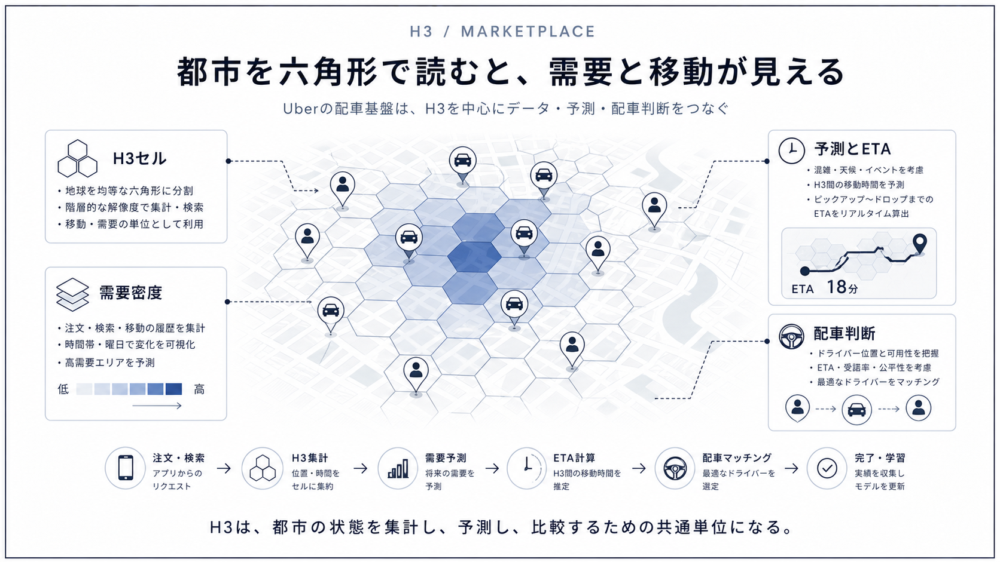
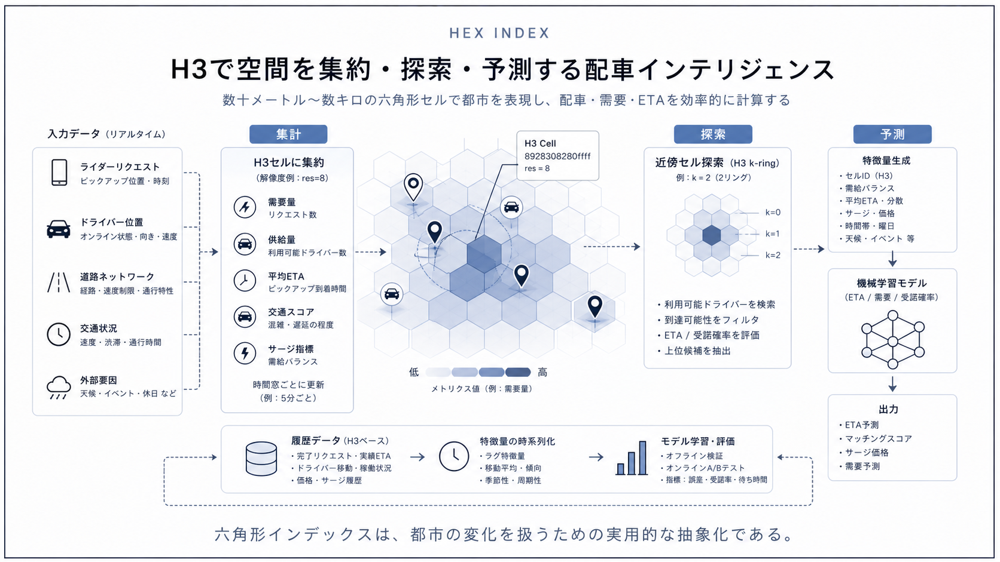
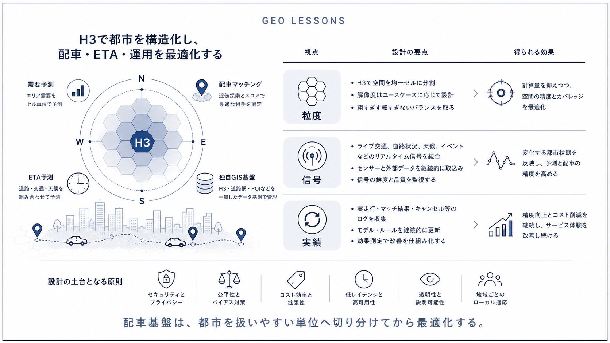

Question Note / Geospatial Architecture
Uber: H3を中心に見る配車・ETA・独自GISの分解

何をしている企業か
配車、配送、食事配達を含む都市内移動のマーケットプレイスを運営する企業。乗客、ドライバー、注文、道路、需要を時々刻々と結びつける必要がある。
位置情報で解いている課題
近くの車両を探すだけでなく、需要の偏り、到着予測、料金、再配置、混雑を同時に扱う。都市を分析単位に分割し、リアルタイム位置と履歴分析を同じ言葉で扱うことが重要になる。

公開されている技術情報
- Uber Engineering「H3: Uber’s Hexagonal Hierarchical Spatial Index」
- H3 GitHub Repository
- H3 Documentation
使っている地理空間技術
公開情報で最も明確なのはH3。H3は六角形を中心に地球表面を階層的セルへ分割する空間インデックスで、集計、近傍探索、需要ヒートマップなどに使いやすい。Uberの独自GISはPostGISの置き換えではなく、H3、ETA、マッチング、キャッシュ、地図・道路ネットワーク処理が組み合わさった運用基盤として理解するのがよい。
「独自GIS」と呼べる部分
独自GIS的な部分は、セル単位で需要供給を見ながら、リアルタイム位置キャッシュとETAモデルを接続し、マーケットプレイス判断へ渡す層。H3そのものはOSSだが、どの粒度で、どの時刻窓で、どの需要指標とつなぐかが企業固有のノウハウになる。
PostGISとの違い
PostGISはSQLで形状、距離、包含、交差を扱うDB拡張。H3はセルIDで空間を粗く・速く分割するインデックス。正確なポリゴン演算はPostGIS、広域集計や近傍バケットはH3という棲み分けが自然。
アーキテクチャ上どこに入るか
Mobile App
↓
Backend API
↓
Geospatial Engine / Index
↓
DB / Cache
↓
Map / Navigation APIこの図でいう Geospatial Engine / Index が、空間インデックス、ルーティング、ETA、マッチング、リアルタイム位置キャッシュを吸収する場所です。PostGISは主に DB / Cache 側の保存・検索基盤として使い、Mapbox等の地図APIは Map / Navigation API 側に置きます。
トラックナビアプリに応用できる点
トラックナビMVPではPostGISとMapboxで十分。将来、休憩所・車両・案件が多くなり、近傍検索やエリア集計が重くなった段階でH3を追加する。最初からUber型のマーケットプレイス基盤は作らない。
まだ真似しなくてよい点
リアルタイム配車最適化、動的料金、供給再配置、都市別の大規模需要予測はMVPでは不要。
将来スケールしたときに参考になる点
車両位置が数万点になったら、H3セル別の混雑・待機・休憩候補集計とRedis等の位置キャッシュを検討する。
結論
Uberの事例は、独自GISを「巨大な地図DB」ではなく、空間インデックス、ルーティング、ETA、マッチング、リアルタイム位置キャッシュ、分析基盤の組み合わせとして読むと理解しやすいです。トラックナビMVPでは、まずPostgreSQL + PostGIS + Mapboxで実用範囲を作り、後からH3/S2/Redis GEO/独自インデックスを足す順番が安全です。
